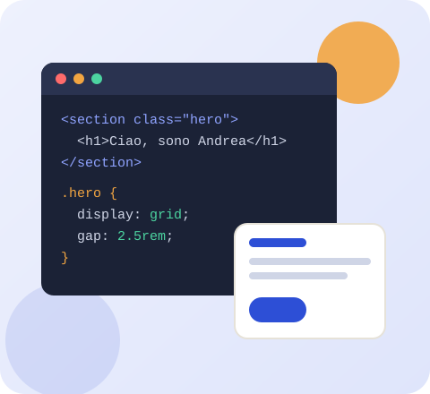
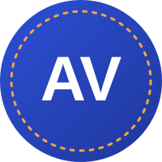

Calma · sito per la meditazione
Timer programmabile, guida alle tecniche, suoni e diario. Router, hook personalizzati, Context API e 63 test.
Partendo dall'analisi dei dati sono arrivato allo sviluppo: oggi scrivo interfacce con HTML, CSS, JavaScript e React, API con Node.js e le porto online con Docker e pipeline automatiche. Mi piace il codice chiaro, testato e che si capisce.


Sto completando il Master start2impact × Unimarconi, un percorso che mi ha portato da Excel, SQL e Python fino allo sviluppo web completo: front end, back end e DevOps. Ogni corso si è chiuso con un progetto reale, pubblicato con README, test e documentazione.
Cerco un ruolo da sviluppatore web junior (front end o full stack) in un team dove imparare dai colleghi e dare contributi concreti fin dai primi giorni. Qui sotto trovi le competenze principali; nella pagina Progetti il codice che le dimostra.
Le barre indicano la mia autovalutazione, non una certificazione.
Timer programmabile, guida alle tecniche, suoni e diario. Router, hook personalizzati, Context API e 63 test.
API REST con Express e MongoDB: utenti, obiettivi e intervalli con filtri, validazione e protezione da NoSQL injection. 109 test.
Docker multi-stage, pipeline CI/CD su GitHub Actions, deploy su GitHub Pages, error tracking e uptime monitoring.
Se hai un'opportunità, un progetto o vuoi solo scambiare due parole sul codice, scrivimi: ti rispondo volentieri.
Vai al modulo di contatto